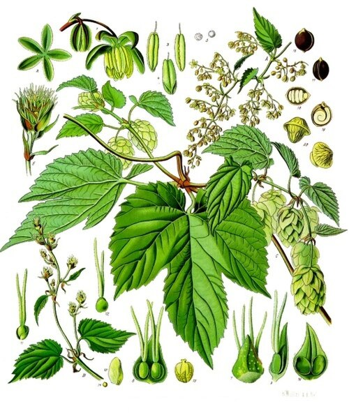
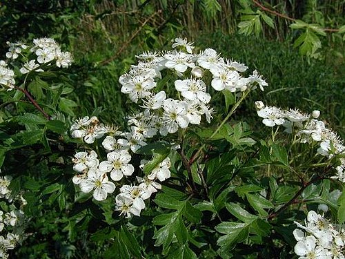
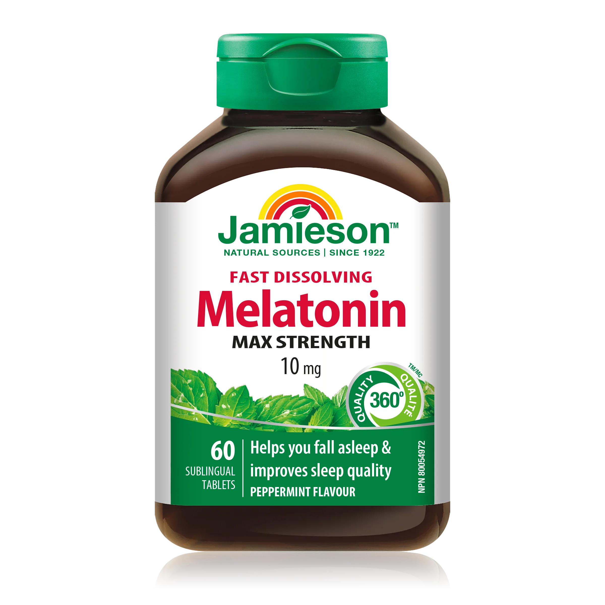
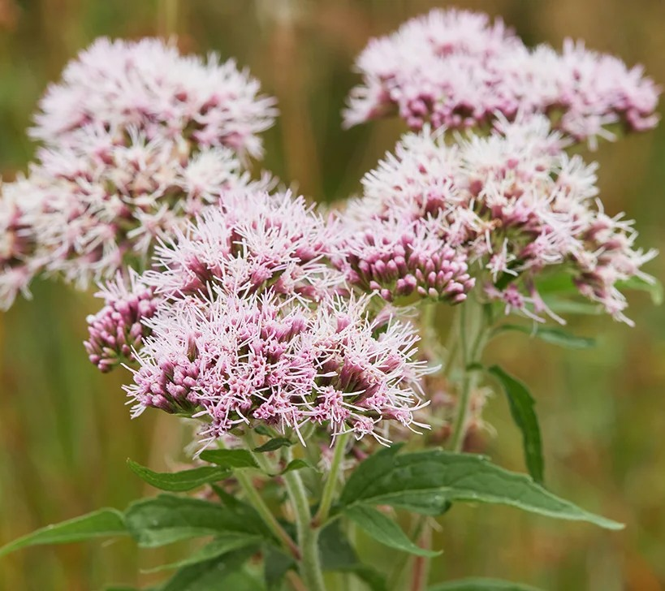
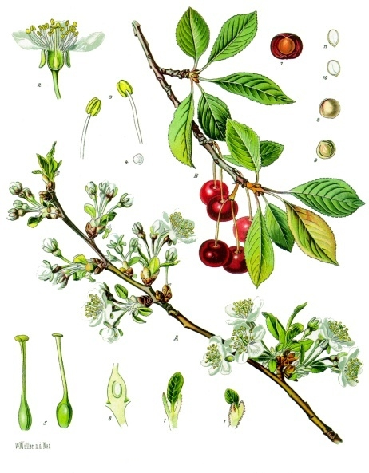

-

Le houblon
Traditionnellement, les inflorescences de houblon sont proposées pour lutter contre les troubles du sommeil et prendre en charge la nervosité et l’agitation. Des études ont démontré leurs propriétés calmantes et hypnotiques chez l’animal. Chez l’homme, leur association avec la valériane a fait apparaître un effet positif sur les troubles du sommeil mineurs. Leur usage bien établi comme sédatif et relaxant repose sur une utilisation séculaire.
-
La passiflore
L’Organisation mondiale de la santé considère la passiflore comme « un sédatif léger efficace sur l’agitation nerveuse, les insomnies et l’anxiété ».
-

L'aubépine
L’Organisation mondiale de la santé considère comme « cliniquement établi » l’usage d’extraits d’aubépine dans le traitement des « insuffisances légères des capacités cardiaques » et comme « traditionnel » leur usage dans « le soutien des fonctions du cœur et des vaisseaux sanguins »
-
La camomille
La camomille est considérée come un sédatif ou tranquilisant léger. Plusieurs études ont prouvés que cette plante aide à obtenir un sommeil de bonne qualité.
Plusieurs se plaignent d'avoir tout essayé mais de toujours souffrir d`un sommeil perturbé. Si cela est votre cas, il est peut être temps de donner une chance au somnifères naturels!
Mais pourquoi opter pour les remèdes de grand-mère plutôt que simplement investir dans une boite de Sleep-EZ? Les somnifères en vente libre ont un paquet de défauts dépendants du type de médication utilisé : la constipation, la diarrhée, les maux de tête, la bouche sèche, et le pire de tous? La faiblesse fatale que chacun de ces remèdes partages?... L’ACCOUTUMANCE! Et oui, chaque remède chimique contre l'insomnie vous cours le risque de ne plus pouvoir dormir sans la pilule magique, ce qui n'est pas idéal. Mieux vaux opter pour un des huit somnifères naturels listés à coté des ce paragraphe.
Sources et articles complémentaires
- "Des produits naturels pour contrer l'insomnie" - Uniprix
- "5 traitements naturels pour lutter contre les troubles du sommeil" -deuxiemeavis.fr
- "Quels sont les traitements naturels pour les troubles du sommeil?" -laboratoires dergam
- "Magnesium supplements and mocktails for better sleep: Do they work?" -MD Anderson Cancer Center, 2024
- "The Tart Cherry Juice Craze and Its Impact on Sleep" - Texas Health
- "Quelles plantes pour soulager les troubles du sommeil?" - Vidal
- "Origine et usages de la passiflore" - Vidal
- "Origine et usages de l'aubépine" - Vidal
- "Does Chamomile Tea Make You Sleep?" - Sleep Foundation
-

La mélatonine
La mélatonine commerciale est un produit synthétique, certe, mais elle est produise naturellement dans notre cerveau et ne cause pas d,effet hypnotique comme tant d'autres somnifères. Elle est majoriteremet utile pour les problèmes liés aux décalages ou à l'horaire de travail.
-

La valériane
Les racines de valériane ont des propriétés sédatives et anxiolythiques. Selon Healthline, il faut prendre 300 à 600 milligrames de racine de valériane 30 minutes avant de se coucher pour le meilleur effet.
-
Le magnésium
Le magnésium est un minnérale qui aide à relaxer nos muscles. Pour l'ingérer, on peu prendre des suppléments ou manger des aliments riches en magnésium tel que les légumes-feuilles, les haricots, les graines, les noix, lea grains entiers, les produits laiters, ou les proteines maigres.
-

Le jus de cerise griotte
Les cerises griottes sont un des seuls fruits à posséder eux mêmes de la mélatonine. De plus, ses propriétées anti inflammatoires peuvent aleger l'inconfort de la journé et promouvoir un meilleur sommeil.